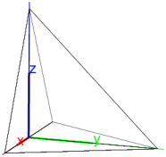

27.13.4 Spheres
The sphere
command creates spheres.
-
sphere takes two arguments:
P,R, either two points or a point and a real number.
- sphere(P,R) returns:
-
a sphere with diameter PR, if R is a point.
- a sphere with center P and radius R, if R is a number.
Examples
